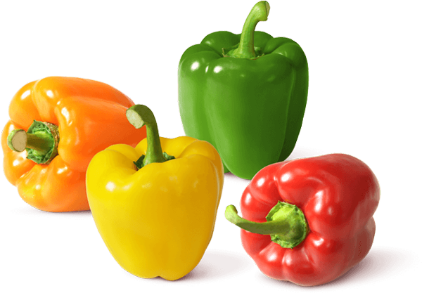
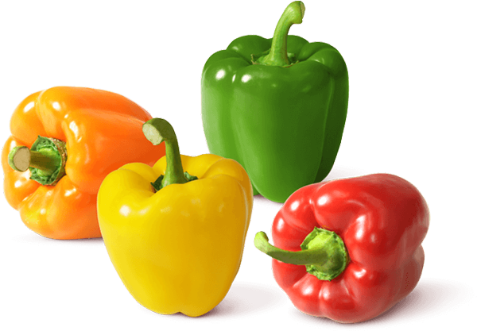
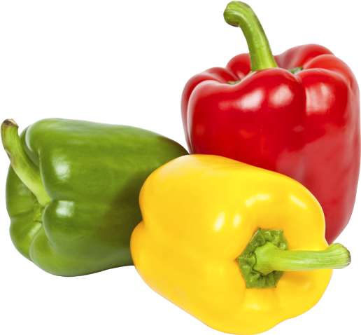
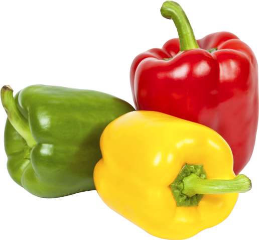

Bellpepper

Bellpepper
Solanales (가지목)
Capsicum annuum L.


 Click this!
봄, 여름5~7월 제철한해살이풀장과피망? 파프리카?
Click this!
봄, 여름5~7월 제철한해살이풀장과피망? 파프리카?
| Calories | 20 kcal | Carbs | 4.64 grams | |
| Sugar | 2.4 grams | Dietary fiber | 1.8 grams | |
| Fat | 0.17 grams | Protein | 0.86 grams |
피망은 가지목 가지과에 속하는 한해살이 풀입니다. 꽃은 7월에 피며 열매는 짧은 타원형의
장과(漿果)로 꼭대기가 납작하고 세로로 골이져 있으며 10월에 익습니다.
한국어로 단고추 라고
부르기도 하며, 약 6,000-7,000년 전에 오늘날의 멕시코에서 원주민에 의해 처음 길들여졌고,
신대륙 항해중 콜롬버스로 인해 유럽과 아시아,
아프리카 등으로 빠르게 퍼졌습니다.주 생산국은
중국, 멕시코, 인도네시아 이고, 우리나라에서는 강원도와 경상남도가 주 생산지로 알려져 있습니다.
피망과 파프리카를 정확한 기준으로 딱 잘라 나누기는 어렵습니다. 둘의 결정적인
차이점은 맛인데, 피망보다 좀 더 달달한 향기와 맛이 나는 것이 파프리카 입니다.
사실 우리나라에서 둘의 차이를 흔히들 과육이 얇고 질긴 것을 피망, 두텁고
아삭거리는 질감이 있는 것을 파프리카라고 구분 짓고 있지만 이 기준은 일본에서
파프리카를 상업적으로 차별화하기위한
전략일 뿐, 실제로는 큰 차이는 없답니다.
다를게
없다구!!!
 
3피망은 고추랑 친척인데, 왜 안맵지?

3피망은 고추랑 친척인데, 왜 안맵지?
피망은 고추과에 속하지만 캡사이신 함유량이 매우 낮거나 아예 없습니다. 스코빌(고추과 식물의 매운맛을 측정하는 데 사용되는 척도)지수는 0~300 정도로 캡사이신 함유량이 매우 낮고, 맵다는 생각이 들지 않을 정도로 매운 맛이 나지 않습니다. 그러나 이 매우 낮은 함유량의 영향인지는 모르겠으나 쓴맛과 풀냄새가 난답니다. 피망과 많이 비교되는 파프리카는 스코빌지수가 아예 0이라고 해요.
안매워요~

About vegetables
the facts about vegetables that we didn't know-!!!
20232504 서예린
yerino9o9seo@gmail.com


 Vegetable List
Vegetable List